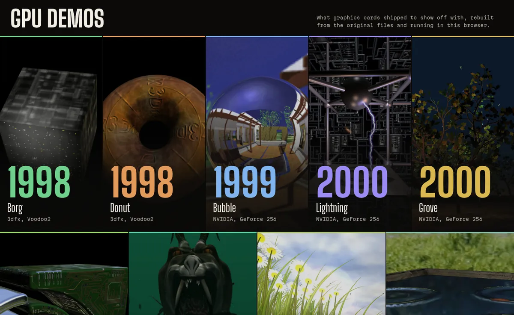

The tech demos Nvidia and ATI shipped to show off their graphics cards, rebuilt to run in a browser tab
1998–2000s GPU showpieces you can poke: a bubble, a sea monster, a wooden pool.
Read the story
Graphics card makers used to ship little real-time tech demos to show what their new chips could do: a chrome bubble, a grass meadow, a chameleon. This Show HN rebuilds them “from the original files”, running in the browser. Each card on the gallery says what it is and how it was drawn.
Some are interactive: “A bubble of springs that mirrors its surroundings. Poke it.” “Ripples in a wooden pool mirror photographs of a whole day around it. Click the water.” “Hold the steel plate to strike it: the bolt lights bumps, heats the metal and throws sparks.” Also: a sea monster with 500 fish that avoid it, and ten thousand blades of grass bending in the wind.
Fresh this morning (Show HN, 39 points so far). Works best on a desktop browser with a real GPU.